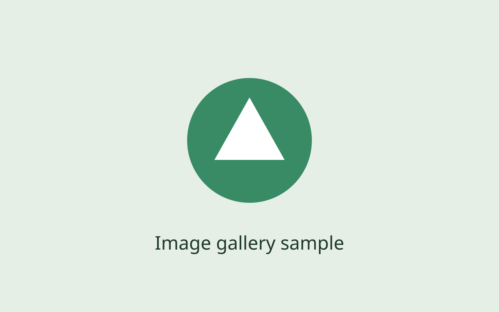

<!doctype html>
<html lang="en">
<meta charset="utf-8"><meta name="viewport" content="width=device-width, initial-scale=1">
<title>Media viewer demo</title><link rel="stylesheet" href="../dist/styles.css">
<style>body{font-family:system-ui;margin:24px;color:#203b2b;background:#f9faf7}main{max-width:800px;margin:auto}h1{font-size:26px}p{line-height:1.6}</style>
<main><h1>Media viewer</h1><p>Video starts on play. Click the picture to open the full-screen viewer.</p>
<div class="media-gallery" data-gallery>
<div class="gallery-stage" tabindex="0"><figure><video playsinline preload="none" poster="./sample.svg" data-duration="119" data-type="native" data-source="../tests/fixtures/preview.webm" aria-label="Local preview"></video></figure></div>
<template><figure><video playsinline preload="none" poster="./sample.svg" data-duration="119" data-type="native" data-source="../tests/fixtures/preview.webm" aria-label="Local preview"></video></figure></template>
<template><figure></figure></template>
<div class="gallery-navigation"><button data-previous>‹</button><span class="gallery-count" role="status" aria-live="polite"></span><button data-next>›</button></div>
</div></main>
<script type="module">
import {mountGallery} from '../dist/gallery.js';
const dispose=mountGallery(document.querySelector('[data-gallery]'),{mountVideo:async(video,{isCurrent})=>{const {mountVideo}=await import('../dist/video.js');if(isCurrent())return mountVideo(video);}});
window.addEventListener('pagehide',dispose,{once:true});
</script></html>
